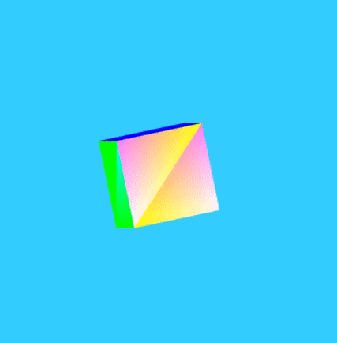

A simple thing we can do is draw a simple triangles untextured plane,
so let's start there, by building code to draw a triangles plane.
In the code above, there are some things we need to pay attention to. We need to define the shaders that will create the color
for our simple scene as well as draw our object. These will establish how the square plane appears on the screen. A shader is a
program, written using the OpenGL ES Shading Language, that takes information about the vertices that make up a shape and
generates the data needed to render the pixels onto the screen: namely, the positions of the pixels and their colors. There are
two shader functions run when drawing WebGL content: the vertex shader and the fragment shader
What is a Vertex Shader?
Vertex shader is a program code, which is called on every vertex. It transforms (move) the geometry (ex: triangle) from
one place to other. It handles the data of each vertex (per-vertex data) such as vertex coordinates, normals, colors,
and texture coordinates.
In the ES GL code of vertex shader, programmers have to define attributes to handle data. These attributes point to a
Vertex Buffer Object written In JavaScript. The following tasks can be performed using vertex shaders along with vertex transformation
Vertex transformation
Normal transformation and normalization
Texture coordinate generation
Texture coordinate transformation
Lighting
Color material application
What is a Fragment Shader?
A mesh is formed by multiple triangles, and the surface of the each triangle is known as a fragment. A fragment shader
is the code that runs on every pixel on each fragment. This is written to calculate and fill the color on individual
pixels. The following tasks can be performed using fragment shaders
Operations on interpolated values
Texture access
Texture application
Fog
Color sum
Tutorial2
In WebGL objects are built using sets of vertices, each of which has a position and a color. By default, all other
pixels' colors (and all its other attributes, including position) are computed using interpolation, automatically
creating smooth gradients. Previously, our vertex shader didn't apply any specific colors to the vertices. Between this
and the fragment shader assigning the fixed color of white to each pixel, the entire square was rendered as solid white.
What is a Varying?
Varying variables provide an interface between Vertex and Fragment Shader. Vertex Shaders compute values per vertex and
fragment shaders compute values per fragment. If you define a varying variable in a vertex shader, its value will be
interpolated (perspective-correct) over the primitive being rendered and you can access the interpolated value in the
fragment shader.
Varying can be used only with the data types float, vec2, vec3, vec4, mat2, mat3, mat4. (arrays of them too.)
Before we can render our square plane, we need to create the buffer that contains its vertex positions and put the
vertex positions in it.
It starts by calling the gl object's createBuffer() method to obtain a buffer into which we'll store the vertex
positions. This is then bound to the context by calling the bindBuffer() method.
Once that's done, we create a JavaScript array containing the position for each vertex of the square plane. This is then
converted into an array of floats and passed into the gl object's bufferData() method to establish the vertex positions
for the object.
Once the shaders are established, the locations are looked up, and the square plane's vertex positions put in a buffer,
we can actually render the scene. Since we're not animating anything in this example, our drawScene() function is very
simple. It uses a few utility routines we'll cover shortly.
After that, we bind the square's vertex buffer to the attribute the shader is using for aVertexPosition and we tell
WebGL how to pull the data out of it. Finally we draw the object by calling the drawArrays() method.
Tutorial4
Try different things by changing a variable like xRote, yRote!
Let's start by making the square rotate.
How do we make the square rotate?
The first thing we'll need is a variable in which to track the current rotation of the square: zRotate: 0.0;
After translating to the initial drawing position for the square, we apply the rotation using "mat4.rotateZ()"
This rotates the modelViewMatrix by the current value of squareRotation, around the Z axis.
To actually animate, we need to add code that changes the value of squareRotation over time. We can do that by creating
a new variable to track the time at which we last animated (let's call it then), then adding the following code to the
end of the main function
Above code uses the amount of time that's passed since the last time we updated the value of squareRotation to determine
how far to rotate the square.
Tutorial5

It's only Tutorial4 deep courses.
How do we creating 3D square rotate?
Let's take our square plane into three dimensions by adding five more faces to create a cube. To do this efficiently,
we're going to switch from drawing using the vertices directly by calling the gl.drawArrays() method to using the vertex
array as a table, and referencing individual vertices in that table to define the positions of each face's vertices, by
calling gl.drawElements().
Consider: each face requires four vertices to define it, but each vertex is shared by three faces. We can pass a lot
fewer data around by building an array of all 24 vertices, then referring to each vertex by its index into that array
instead of moving entire sets of coordinates around. If you wonder why we need 24 vertices, and not just 8, it is
because each corner belongs to three faces of different colors, and a single vertex needs to have a single specific
color; therefore we will create three copies of each vertex in three different colors, one for each face.